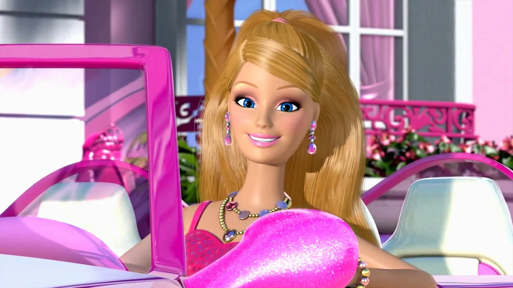

Barbie em Life in the Dreamhouse é uma versão moderna, divertida e autêntica da icônica boneca Barbie. A série animada, lançada em formato de webisódios, mostra Barbie vivendo em Malibu com suas irmãs e amigos, enfrentando situações engraçadas e exageradas do cotidiano, sempre com muito estilo e humor. Ela é retratada como uma personagem carismática, confiante e cheia de talentos, mantendo sua essência inspiradora.
História
Vive em uma mansão high-tech conhecida como Dreamhouse, em Malibu.
Convive com suas irmãs Skipper, Stacie e Chelsea, além do namorado Ken e das amigas Nikki, Teresa, entre outras.
A série gira em torno das aventuras, festas, desafios e momentos do dia a dia de Barbie e seus amigos.
Habilidades
É multitalentosa: já teve centenas de profissões ao longo dos anos, inclusive na série.
Tem habilidades em moda, ciência, culinária, esportes e até em tecnologia.
Sempre resolve problemas com criatividade e otimismo.
Características
Personalidade confiante, gentil, inteligente e otimista.
Ícone da moda: está sempre com looks estilosos e diferentes.
Protetora com suas irmãs e leal com os amigos.
Gosta de se divertir, mas também é responsável e determinada.
Curiosidades
A série mistura humor com metalinguagem: os personagens sabem que são bonecos!
O Dreamhouse tem recursos absurdos e engraçados, como elevador de roupas e robôs ajudantes.
Barbie nunca envelhece, e isso é uma piada recorrente na série
O visual e a personalidade de Barbie em Life in the Dreamhouse ajudaram a aproximá-la de uma nova geração.